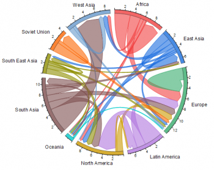
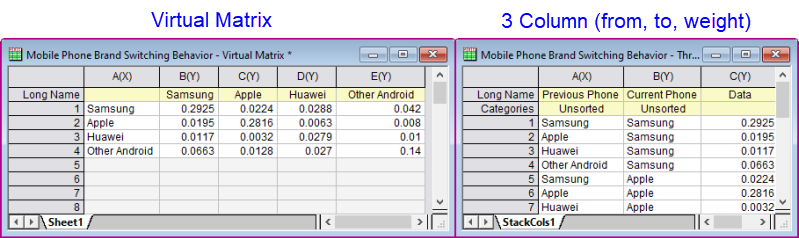
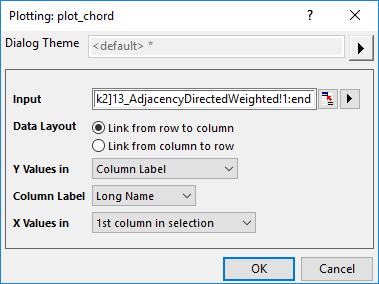
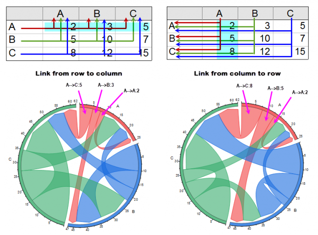

Sehnendiagramm/Sehnendiagramm mit Verhältnislayout
Chord-Diagram
|  |
 |
|
Sehnendiagramm
|
Sehnendiagramm mit Verhältnislayout
|
Datenanforderungen
Daten können in zwei Formen angeordnet werden:
- Eine virtuelle Matrix, in der sich Eingabe- und Ausgabeknoten in Zeilen und Spalten befinden.
- Ein Arbeitsblatt mit 3 Spalten, in dem die ersten zwei Spalten kategorial sind und die Knoten "Von" und "Bis" listen und die dritte Spalte numerisch ist und die Messung für "Weight" (Gewicht) enthält.
- 
Diagramm erstellen
- Wählen Sie die gewünschten Daten aus.
- Wählen Sie im Menü .
Der Dialog plot_chord
Wenn Sie einen Block von Werten ausgewählt haben, dessen erste beide Spalten kein Text oder nicht kategorial sind, oder Sie keine Daten ausgewählt haben, wird eine X-Funktions-Dialog angezeigt:

Eingabe
Legen Sie den Eingabeblock fest, genauso wie den Block einer virtuellen Matrix.
Datenlayout
Legen die Flussrichtung der Verbindungen fest.
- Verbindung von Zeile zu Spalte: Die Verbindung startet von dem festgelegten Wert in Zeilen und endet bei dem festgelegten Wert in Spalten.
- Verbindung von Spalte zu Zeile: Die Verbindung startet von dem festgelegten Wert in Spalten und endet bei dem festgelegten Wert in Zeilen.

X-Werte in/Y-Werte in
Legen Sie die X-Werte und Y-Werte im ausgewählten Block entsprechend der Einstellungen des Datenlayouts fest.
Generell beginnt der Fluss von den X-Werten aus und endet bei den Y-Werten. Das heißt, X-Werte sind Verbindungsanfänge und Y-Werte sind Verbindungsenden.
Spalte
Wenn Sie Spaltenbeschriftung in der Auswahlliste X-Werte in/Y-Werte in ausgewählt haben, können Sie weiterhin festlegen, welche Spaltenbeschriftungszeile die X- und Y-Werte speichert*(Anfänge und Enden der Verbindungen).
X-Bereich/Y-Bereich
Wenn Sie Benutzerdefiniert in der Auswahlliste X-Werte in/Y-Werte in ausgewählt haben, können Sie weiterhin einen Bereich festlegen, der die X- und Y-Werte speichert*(Anfänge und Enden der Verbindungen).
Vorlage
chord.otpu (installiert im EXE-Ordner von Origin)
ChordRatio.otpu (installiert im EXE-Ordner von Origin)
Hinweise
- Der Unterschied bei den Einstellungen des Sehnendiagramms und des Sehnendiagramms mit Verhältnislayout, besteht darin, ob Sie das Kontrollkästchen Verhältnislayout auf der Registerkarte Layout des Dialogs Details Zeichnung aktiviert wird.
- Wenn Sie Verhältnislayout aktiviert haben, wird der Austausch zwischen zwei Knoten innerhalb einer Verbindung gezeigt; wenn Verhältnislayout nicht aktiviert wurde, wird der Austausch in zwei Verbindungen gezeigt, von A zu B fließend und von B zu A fließend.
- Wenn das Verhältnislayout aktiviert ist, können Sie zwischen Vor- und Nach-Modus wählen.
Informationen zum benutzerdefinierten Anpassen von Sehnendiagrammen finden Sie unter folgenden Themen: